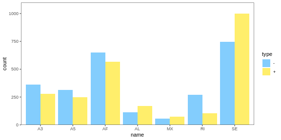
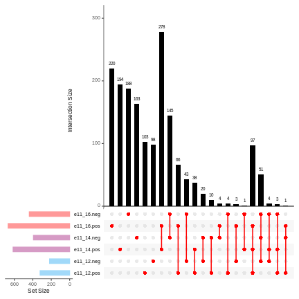
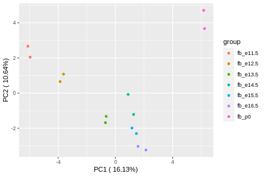
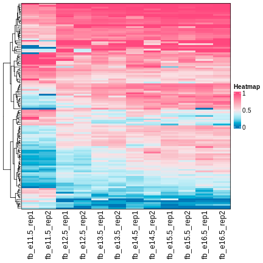
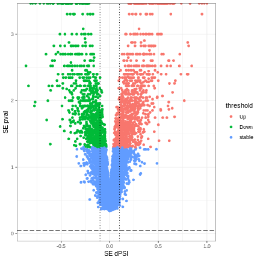

可变剪切事件分析
事件分布
barplot
barplot 用于绘制不同条件、事件类型的可变剪切数目分布。
该命令参数设置如下：
- -i: 输入文件
- -o: 输出图片
- -dg: AS 事件将根据dPSI的正方划分为两组 (group +: dPSI > 0, group -: dPSI < 0)
- -xl: x 轴标签
示例：
astk barplot -i result/fb_e11_based/sig01/fb_e11_p0_*.sig.dpsi \
-o img/fb_e11_p0_bar.png -dg -xl A3 A5 AF AL MX RI SE

upset plot
upset 用于绘制可变剪切事件的在不同组的交集图。
参数设置如下：
- -i: dpsi文件
- -o: 输出文件
- -xl: x 轴标签
- -dg: AS 事件将根据dPSI的正方划分为两组 (group +: dPSI > 0, group -: dPSI < 0)
示例：
$ astk upset -i result/fb_e11_based/sig01/fb_e11_12_SE.sig.dpsi \
result/fb_e11_based/sig01/fb_e11_14_SE.sig.dpsi \
result/fb_e11_based/sig01/fb_e11_16_SE.sig.dpsi \
-o img/fb_upset.png -xl e11_12 e11_14 e11_16 -dg

PSI/dPSI 分析
PCA
pca根据PSI值来绘制PCA图.
参数设置如下：
- -i: psi文件
- -o: 输出图片路径
- -fmt: 图片格式
- --width: 图片长度
- --height：图片高度
- -gn: 分组名
示例：
$ astk pca -i result/fb_e11_based/psi/fb_e11_12_SE_c1.psi \
result/fb_e11_based/psi/fb_e11_1[2-6]_SE_c2.psi \
result/fb_e11_based/psi/fb_e11_p0_SE_c2.psi \
-o img/fb_pca.png -fmt png --width 6 --height 4 \
-gn fb_e11.5 fb_e12.5 fb_e13.5 fb_e14.5 fb_e15.5 fb_e16.5 fb_p0

heatmap plot
heatmap 用于绘制PSI热图. hm是heatmap的别名.
参数设置如下：
- -i: psi文件
- -o: 输出图片
- -fmt: 图片格式
示例：
$ astk hm -i result/fb_e11_based/sig01/psi/fb_e11_12_SE_c1.sig.psi \
result/fb_e11_based/sig01/psi/fb_e11_1*_SE_c2.sig.psi \
-o img/fb_hm.png -fmt png

volcano plot
volcano 用于绘制dPSI火山图。 vol是volcano的别名
参数设置如下:
- -i: dpsi文件
- -o: 输出文件
示例：
$ astk volcano -i result/fb_e11_based/dpsi/fb_e11_p0_SE.dpsi \
-o img/fb_e11_p0_SE.vol.png
